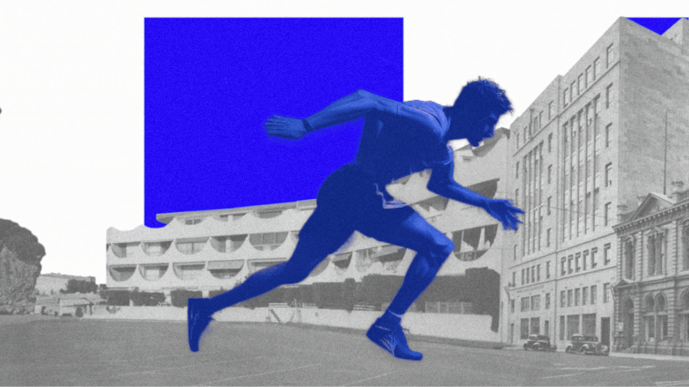
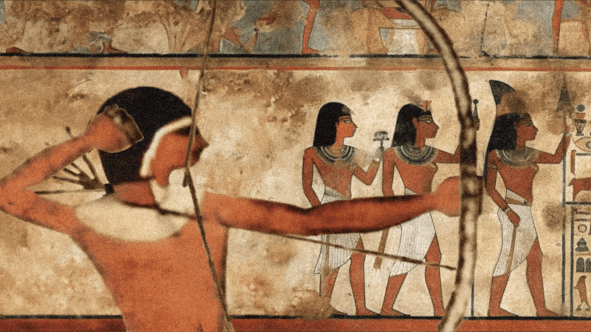
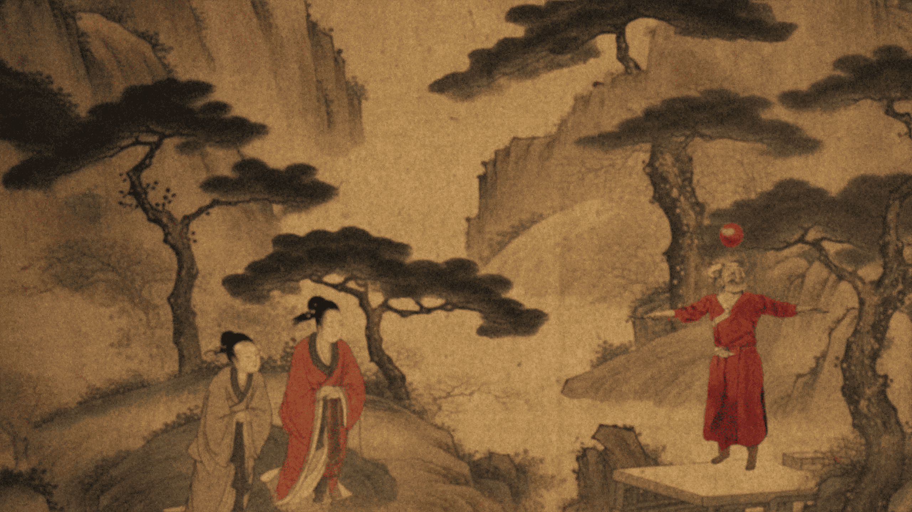
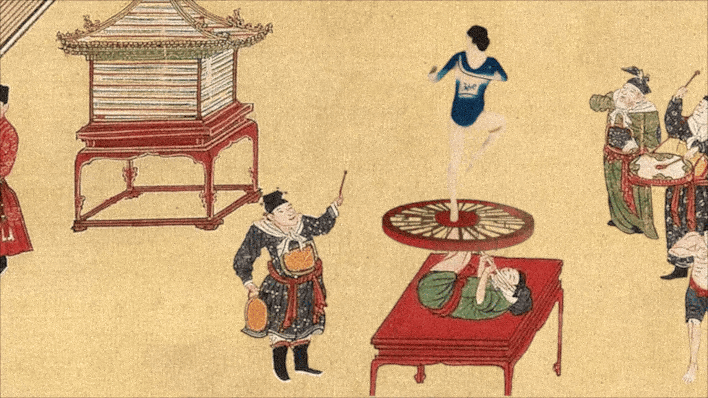
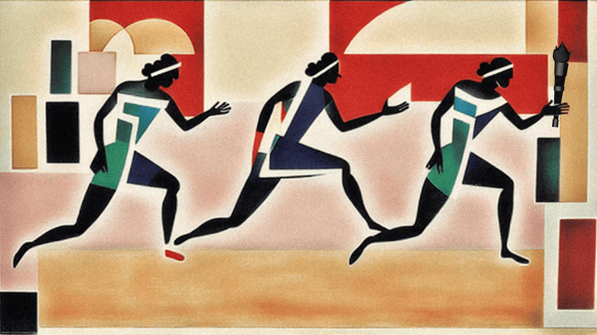
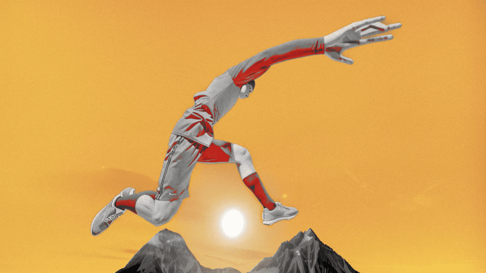

青春绽放
PROJECT INFO
CLIENT
Chengdu FISU World University Games Summer
FORMAT
AIGC Single-channel Video
DURATION
2'36"
YEAR
2023
ROLE
AIGC Animation / 3D Animation
TOOLS
Stable Diffusion / Blender / After Effects
作品简介
STILLS





